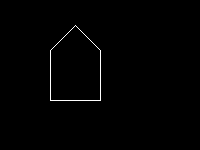
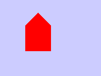
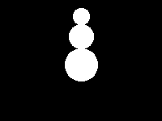
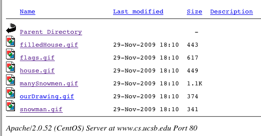
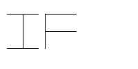
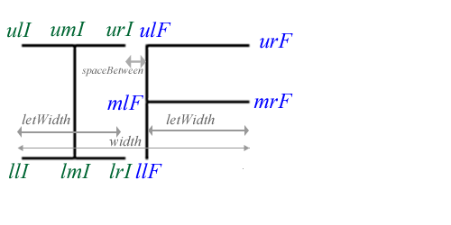
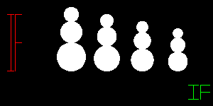

In this lab, you'll learn how to write C code that can make drawings like these:

You'll be given some basic tools to draw in either black and white, or color:
We can also discuss, as student interests dictate, how to extend those routine to do other interesting things like
There's a program called ourDrawing.c—that's where you'll put your code this week. All the other files—you pretty much shouldn't have to make any changes to those.
In ourDrawing.c, you'll use the functions provided in the other files to make your drawing.
What you draw is up to you—as we'll explain in lab.
By the time you have completed this lab, you should:
Before completing this lab, you should have completed the labs up through lab07. In particular, you should be comfortable working with arrays, structs, arrays of structs, and passing structs and arrays of structs to functions.
Work with the same partner you had in lab07—or if he/she is not available for some reason, see your TA and/or instructor about getting a new pair partner assigned.
If you didn't come to lab during the week of Nov 19/20, it is YOUR RESPONSIBILITY to follow up and get a pair partner assigned.
If he/she is not avaialble, and you are assigned a new partner, then complete a new version of homework Assignment H09 including sending the email to the email address indicated.
Remember: don't share passwords. Instead, use scp or email to share files with each other at the end of each work session. (See lab05, step 2 for details of how to use scp.)
Ultimately, you should BOTH submit your work via the turnin program, just to be safe
If you've forgotten how to create the directory, consult steps 1 and 2 from lab01.
The files for this weeks lab can be found here:
And here:
~pconrad/public_html/cs16/09F/labs/lab08/files/*
You can use the same techniques described in lab04 to copy those into your ~/cs16/lab06 directory. Consult the instructions for lab04 if you don't remember how to do this.
This week, there is a live presentation about the code by Prof. Conrad and/or your TA, so it is important to be at lab in person.
What you are given is a collection of code containing three libraries:
You'll also see header files that support these C files:
You'll also see some programs that contain main programs that use these libraries:
| file | what it does | sample image |
|---|---|---|
| testMain.c | contains only test cases, mostly for the functions in shapeFunctions.c | n/a |
| drawHouse.c | draws a black and white house, using simple lines | |
| drawFilledColorHouse.c | draws a filled house in color | |
| drawSnowman.c | draws a single snowman in black and white | |
| drawManySnowmen.c | shows how to make drawing a snowman be a function, so you can draw several snowmen of different sizes | |
| drawFlags.c | shows how to draw a simple tri-color flag (in this case the GermanFlag) using filledBoxes. Another example of abstracting a drawing into a function | |
| ourDrawing.c | draws whatever you want (at the moment, it's blank!) |
We'll also go over what happens when you type "make". This week there is a Makefile that controls what happens.
You'll need to understand just two things:
To start off, type "make" (all by itself) at the Unix command prompt.
When you do you'll see output indicating that
Here's an example:
-bash-3.2$ make
gcc -c testMain.c
gcc -c drawingFunctions.c
gcc -c shapeFunctions.c
gcc -c tdd.c
gcc -lm -Wall -g drawingFunctions.o shapeFunctions.o tdd.o testMain.o -o testMain
gcc -c drawHouse.c
...
(many lines of output deleted... full transcript available in make.output.txt)
All tests passed!
-bash-3.2$.
The key line of output to look for is this one—except it will have your username, not jsmith—unless your username happens to be jsmith:
Visit http://www.cs.ucsb.edu/~jsmith/cs16/lab08 to see your picsGo to that website, and you'll see something like this:

The drawings in that directory are the ones created by the code in the files below:
| GIF file | C file |
|---|---|
| filledHouse.gif | drawFilledColorHouse.c |
| flags.gif | drawFlags.c |
| house.gif | drawHouse.c |
| manySnowmen.gif | drawManySnowmen.c |
| ourDrawing.gif This is where your drawing will appear! |
ourDrawing.c This is where you put your code! |
| snowman.gif | drawSnowman.gif |
If your files get messed up and you want to start over, the "make clean" command will get rid of all the extra files is your current directory so that you can type "make" again from scratch.
Here's what was presented in lab on 11/19 and 11/20 about registering your drawing:
You need to log into Gauchospace and go to the discussion form near the top of the main page labelled 'register your lab08 drawings here'.
Look to see if anyone else has already registered the same item that you want to draw. You need to draw something that has not already been chosen in order to get full credit.
You may make your item unique by adding a unique "twist"—e.g. if they are drawing a "car", you can't just draw a "car", but you can draw:
To make your drawing, you put code into the file ourDrawing.c.
The first step is to set up the function call to initDrawing with the correct parameters:
initDrawing(&d, drawing_type, width, height, background_color);
The choices you'll need to make here are:
The next step is to add code into one of the two functions called drawShape1 and drawShape2. In each case, you should rename the function to a more sensible name such as:
Decide what parameters the drawing functions will take.
At a minimum, it should take a 'reference point', and at least one dimension—a width, height, or radius—something that allows you to draw your picture at different scales.
What if my drawing has hard coded points?
That's ok as a starting point.
Hard coded points can easily be converted into a formula with a little extra work—once you get the hang of it, it isn't that tough.
A drawing with hard coded points is also ok for partial credit.
What if I don't want my drawing to have "two" of something on it at different sizes?
Or what if my converting my complex drawing from hard coded points is going to be a major pain!
If you already have a drawing that you are very proud of, and you don't want to mess up the artistry, but you still want full credit, here's a work around for you.
This is also a way out if you are not feeling very creative and just want to get this assignment done.
Make a drawing function to draw a drawing consisting of just the initials of your first name, and that of your pair partner. For example, if Ian Smith were to partner with Frieda Jones, their drawing might be IF, and might have points like this:

We can label these points like this:

And then draw this with code like the following:
void drawIF(struct Drawing *d,
struct Point ul, // upper left, or center bottom, or whatever
double width,
double height,
int color)
{
double letWidth = width * 0.45; // width of each letter
double spaceBetween = width * 0.1; // space between letters
struct Point ulI, umI, urI, llI, lmI, lrI; // I upper left, middle, right, etc.
struct Point ulF, mlF, llF, urF, mrF;// F upper, middle, and lower left, etc.
// set points of I across the top
initPoint(&ulI, ul.x, ul.y);
initPoint(&umI, ul.x + letWidth/2.0, ul.y);
initPoint(&urI, ul.x + letWidth, ul.y);
// set points of I across the bottom
initPoint(&llI, ul.x, ul.y + height);
initPoint(&lmI, ul.x + letWidth/2.0, ul.y + height);
initPoint(&lrI, ul.x + letWidth, ul.y + height);
// draw the I
drawLine(d, ulI, urI, color); // across the top
drawLine(d, llI, lrI, color); // across the bottom
drawLine(d, umI, lmI, color); // down the middle
// set points of F down the left hand side, top to bottom
initPoint(&ulF, ul.x + letWidth + spaceBetween, ul.y);
etc...
}
With this in place, you can now "tag" your drawing with two tags of different sizes and colors, to create an effect something like this:

With function calls like these:
drawIF(&d,makePoint(10,20),20,80, COLOR_RED);
drawIF(&d,makePoint(265,120),30,20, COLOR_GREEN)
If you do this, then even if your main drawing is hard coded and can't be scaled, you'll get full credit for having created at least one drawing that can be scaled and relocated (i.e. your tag), and you wont have to mess up the artistic integrity of your main drawing.
Why having a drawing in two places at different sizes is so important
The reason it is so important to have a drawing element that appears at different places and with different sizes is that this shows you really understand how to apply the idea of abstraction—which is one of the central ideas in Computer Science.
Finishing up
You are ready to move on to scripting and submitting when:
To script and submit, create a script lab08.txt in which you:
Check the web site one last time to make sure that your drawing appears there under the name http://www.cs.ucsb.edu/~yourusername/cs16/lab08/ourDrawing.gif.
Then, submit the contents of your lab08 directory via:
turnin lab08@cs16 lab08
Copyright 2009, Phillip T. Conrad, CS Dept, UC Santa Barbara. Permission to copy for non-commercial, non-profit, educational purposes granted, provided appropriate credit is given; all other rights reserved.